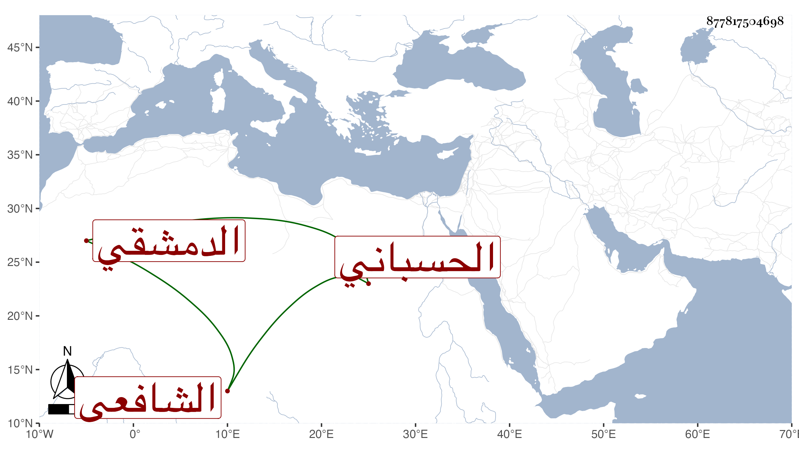

0902Sakhawi.DawLamic.ITO20230111-ara1.EIS1600.877817504698
Biography ID: 877817504698
148
أحمد بن عمر بن حجي بن موسى بن أحمد الشهاب بن النجم بن العلاء الحسباني الأصل الدمشقي الشافعي أخو البهاء محمد ويعرف بابن حجي . ولد في ربيع الأول سنة سبع وعشرين وثمانمائة ورغب له أبوه قبل قتله عن تدريس الشامية البرانية واستنكر الناس ذلك لصغره جدا ولكونها لم يلها إلا الأساطين واستنيب عنه فيها واستمرت معه حتى مات في رابع عشر جمادى الأولى سنة خمس وأربعين فاستقر بعده فيها أخوه .
